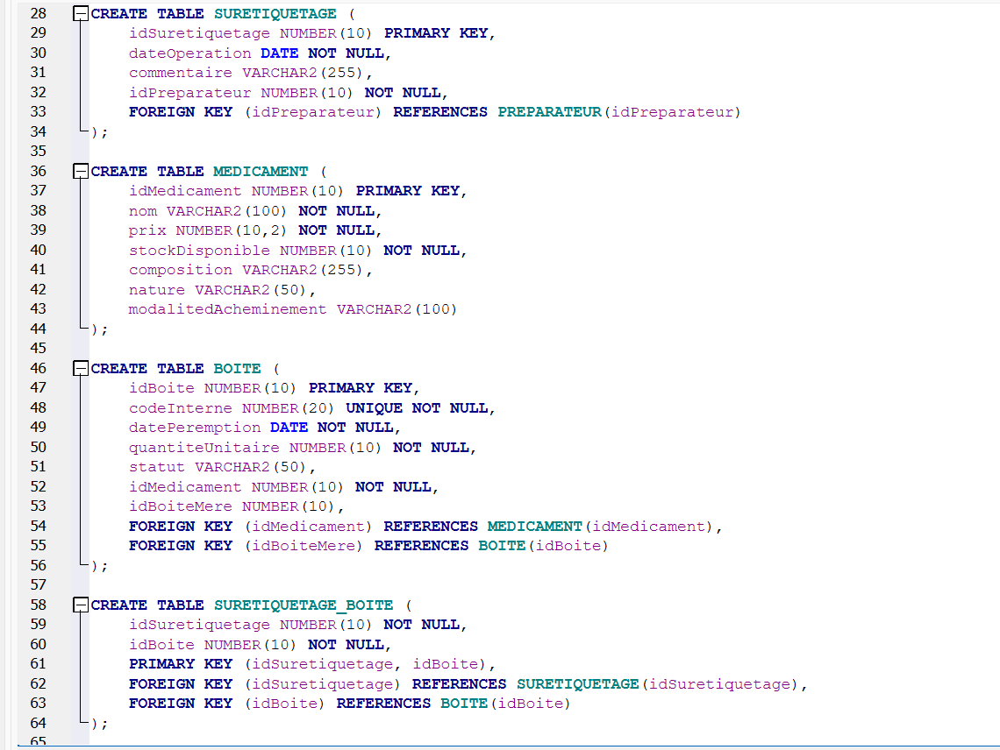
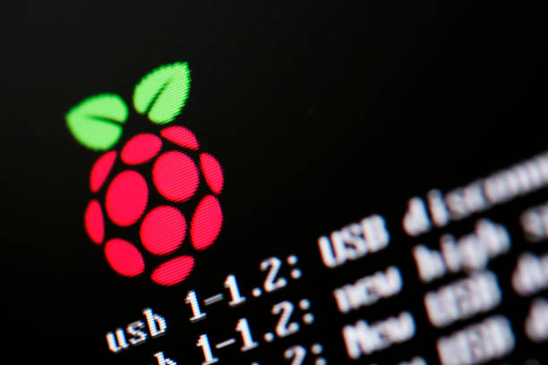
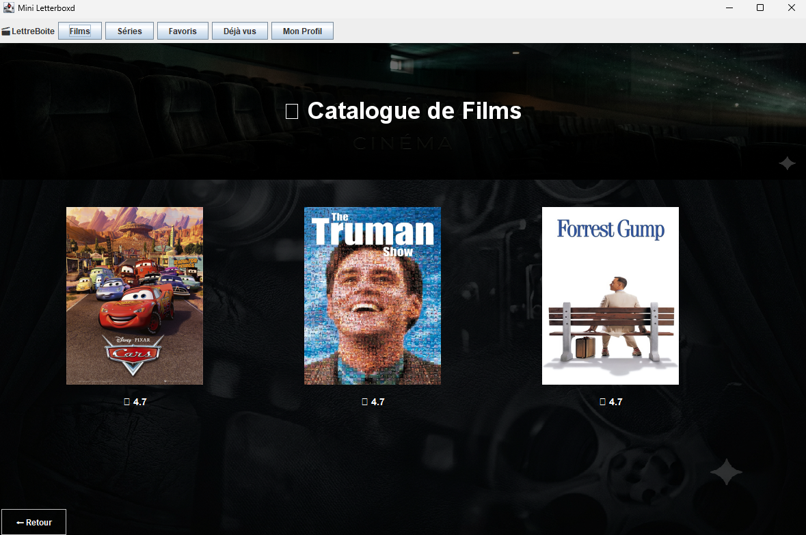

Mes Projets
Jeu vidéo 2D – C++
Projet scolaire avec programmation orientée objet. Jeu en 2D : ramasser toutes les pièces sans se faire toucher.
Site web – HTML/CSS
Projet scolaire de création d’un site interactif pour une agence de voyage.
Base de données – SQL

Conception d’une base relationnelle et requêtes complexes pour une pharmacie d’hôpital.
Installation poste de travail – Raspberry Pi

Mise en place de postes de travail sur Raspberry Pi 400, configuration SSH, gestion des utilisateurs, droits sudo.
Développement d'une application - En cours...

Projet scolaire de développement d'une application de gestion de collection de médias (films & séries) inspirée de Letterboxd.